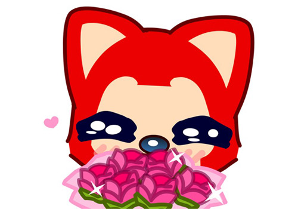

- 返回首页
- 中文名：阿狸
- 英文名：Ali
- 生日：3月16日
- 星座：双鱼座
- 血型：0型
- 身高：3.7厘米
- 体重:：2.7KG
- 类型：狐狸

阿狸即将推出动画片 作者考虑拍电影
导读：阿狸这个形象最初以QQ表情的方式在网上流行，阿狸又萌又潮的形象背后，有着感人的童话故事。作者徐瀚透露，将推出以阿狸为原型的动画片，至于是否考虑将阿狸拍成电影，他坦言，拍电影未来有考虑，但不是这两年的事情。

近日，阿狸的创作者徐瀚来到沈阳做《阿狸・永远站》的签售会，并介绍了记者的采访。
阿狸已成动画片主角，HANS透露，目前其主要精力还是在创作上面，“所有故事的创作灵感都来自生活，比如我在出租车上听广播，听到感人的故事我就会写成阿狸的故事。”毕业于清华大学美术学院的HANS，2006年成立公司来运作阿狸。从最开始作为QQ表情被大家熟知开始，发展至今的阿狸已经不再是一组简单的QQ表情，用HANS的话来说“阿狸也算是一个品牌了”。
如今，阿狸的衍生品中不仅包括了杯子、公仔、包等，而且开始进军服装领域，HANS签售时身穿的黑色T恤也是与某服装品牌的合作。“今年2月发表了第一集，在网上的点击量超过百万。”HANS透露，此后他将推出以阿狸为原型的动画片，至于是否考虑将阿狸拍成电影，HANS坦言：“(拍电影)未来有考虑，但不是这两年的事情。”
阿狸这个形象最初以QQ表情的方式在网上流行，跟当年的兔斯基一样，只不过阿狸又萌又潮的形象背后，有着感人的童话故事。
观看在线电影：《阿狸奇遇记》
阿狸表情